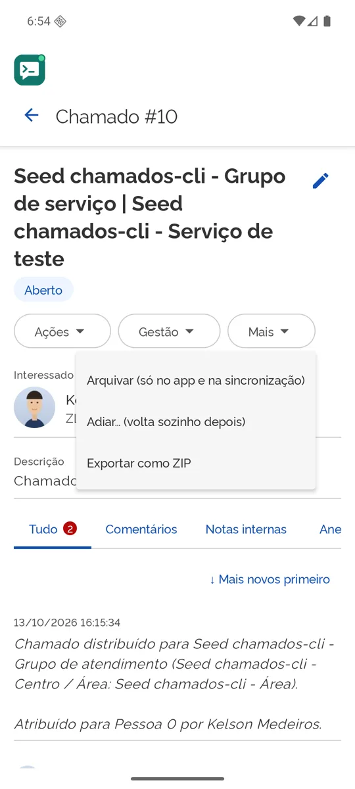

Android
Para quem deseja organizar a vida
Seus chamados ficam em ordem no bolso: o que importa agora no topo, o resto guardado e voltando sozinho na hora certa.
- Adie um chamado e ele volta ao topo, marcado, no dia e hora que você escolher.
- Arquive o que já passou, sem apagar nada no SUAP.
- Selecione vários e arquive, adie, comente ou ponha tags de uma vez.
- Dê um título seu a cada chamado: o SUAP não tem, o app sim.
- Receba avisos quando algo muda, e compartilhe do celular direto para um chamado.

